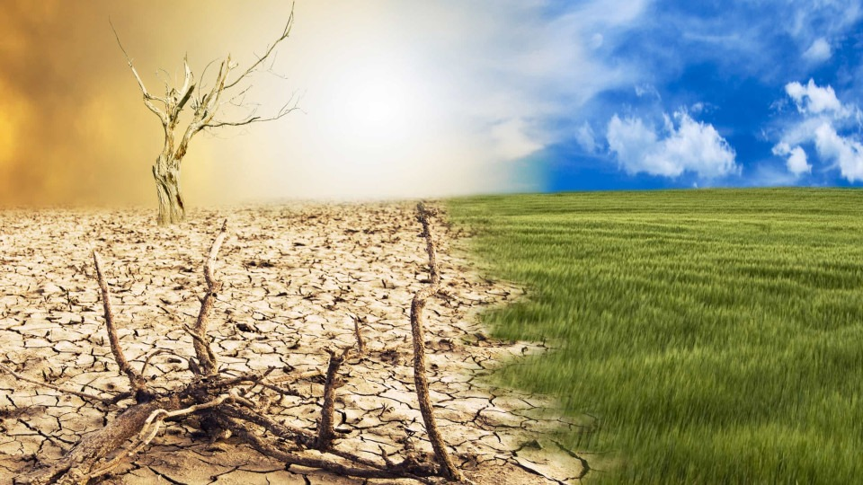
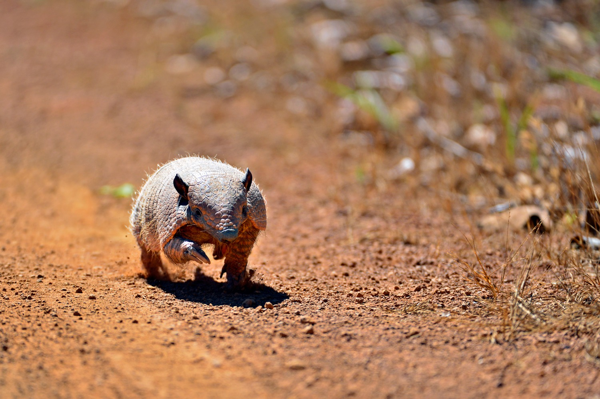
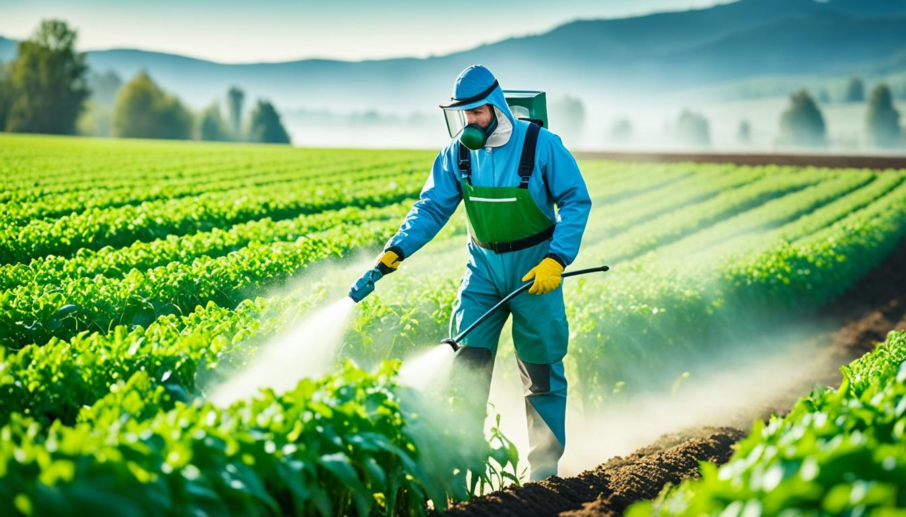

Moldando o Futuro da Saúde e da Agricultura
Nosso Foco
Clima
Produção de alimentos e nutrição resilientes ao clima, utilizando
e conservando uma paisagem saudável e ecossistemas em pleno
funcionamento.

Segurança dos Alimentos
Ajudando as pessoas a obter acesso a alimentos suficientes,
seguros e nutritivos. Auxiliando os agricultores a produzir mais e
a perder menos para pragas e doenças. Apoiando o acesso dos
agricultores aos mercados e soluções positivas para a natureza na
produção e proteção de cultivos.
Biodiversidade
Desenvolvendo soluções baseadas na natureza, incluindo soluções de
controle biológico, para pragas e doenças que minimizam danos
ambientais, auxiliando na proteção e restauração dos ecossistemas
globais e da biodiversidade.


Gestão e Cuidado com Pragas
Aplicando métodos de controle de pragas para proteger colheitas e
garantir a segurança alimentar de forma sustentável. Integrando
abordagens eficazes para minimizar danos ambientais e maximizar a
produtividade agrícola.
Ocorrências Resolvidas
Ocorrências Registradas